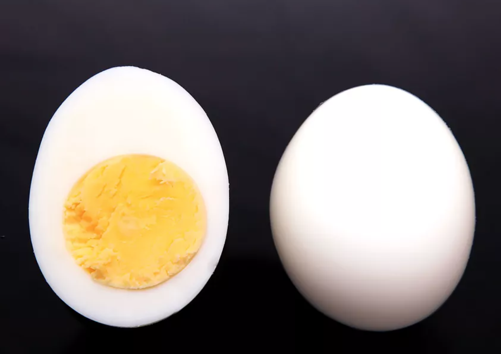

Hard Boiled Eggs

Perfect hard-boiled eggs require the right technique. We cooked dozens and dozens of eggs before arriving at this method, which delivers eggs that are evenly cooked throughout, with just-set yolks.
Ingredients
- 1 tray of ice cubes (optional; for serving cold)
- 3 quarts (2.8L) water
- 1 to 6 large eggs
Steps
- If serving eggs cold, add 1 tray of ice cubes to a large bowl and fill with water.
- Bring 3 quarts (2.8L) water to a boil in a large pot. Carefully lower eggs into pot and continue to boil for 30 seconds. Cover tightly, reduce heat to low (water should maintain a bare simmer), and continue cooking for 11 minutes. Serve immediately if serving hot. If serving cold, immediately place eggs in bowl of ice water and allow to cool for at least 15 minutes before peeling under cool running water.
- To peel, first gently tap hard-boiled eggs all over to thoroughly crack the shell, then remove shell under a thin stream of running water. (The water helps get under the shell and lift it off the egg.)